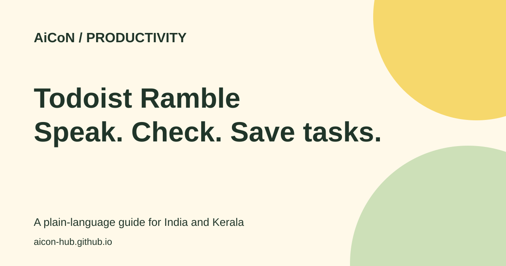

Todoist Ramble: add tasks by voice, free limits
Ramble turns spoken plans into tasks in Todoist. You can say what needs doing, check the suggested tasks and save them without typing each one.

What does Ramble do?
Ramble listens to speech and builds a task preview while you talk. It can pick up task names, dates, times, projects, priorities and labels. A priority is a marker for how important a task is. A label is a tag used to group tasks.
It is a quick way to capture tasks, not a chat assistant that will carry out your errands. Saying “pay the electricity bill” creates a task. It does not pay the bill.
Why it can help in Kerala and India
You can capture study deadlines, shopping errands or work follow-ups when speaking is easier than typing. Start with a quiet room and a short list. Local names and mixed-language speech can be misheard.
The official Ramble page says it understands 40 languages and allows switching languages during a session. It does not list those languages in the material checked here. Malayalam support was not confirmed. Test your preferred language before depending on it for a deadline.
How to add tasks by voice
- Open or update Todoist and sign in to your account. Check the help page's latest supported version if Ramble is missing.
- Open Quick Add and choose the waveform icon. On web and desktop, the help page also describes a sidebar option.
- Allow microphone access when asked. Use a working microphone in a quiet place.
- Say each task clearly. Add a date or project if you want it captured. For example: “Buy notebooks tomorrow. Submit the lab report on Friday.”
- Watch the preview. Check names, dates, times and the selected project before saving.
- Say “Actually, I meant...” to change a suggested task, or “Remove that” to delete one.
- End with “that's all”, or use Add tasks on web. On mobile, use the checkmark shown in the current app.
- Open the saved tasks and check the dates again. A task date is not the same thing as a guaranteed reminder.
Free plan and paid limits
| Beginner / free | Up to 10 Ramble sessions per month. The help page says Pro Legacy has the same limit. |
|---|---|
| Reset | The count resets on the first day of each month in UTC, not at India's local midnight. |
| What counts | Each dictation counts, even if you do not add the tasks. All devices share one account total. |
| Pro and Business | Unlimited sessions, though rare rate limits may apply. |
| Other limits | Deadlines and task durations are paid features. Ramble does not currently add subtasks or custom reminders, according to the help page. |
| India price | Check Todoist's current local checkout for INR price, tax and billing period. No fixed Indian price is confirmed here. |
Devices, privacy and caveats
The help page covers web, desktop, iOS, iPadOS and Android. It also describes a Wear OS beta with fewer supported task details. Use the current help page rather than treating older app-version numbers as permanent requirements.
Todoist says the audio is processed securely and is not stored or used for training. The resulting task text is saved in Todoist. These are the company's statements, not an independent audit. Avoid dictating secrets or confidential client details into any AI feature without permission.
This review found no India-specific restriction in the pages checked, but it did not test an Indian account or every app-store route.
The earlier post remains broadly supported. This article makes the free limit explicit: 10 sessions a month, shared across devices. “Unlimited” applies to current Pro and Business, with possible rate limits. Language count alone does not confirm Malayalam.
Frequently asked questions
Is Ramble free?
It is available on the free Beginner plan, with 10 sessions per month.
Will one session count if I discard the tasks?
Yes. The official help page says each dictation counts.
Can Ramble complete a task for me?
No. It captures tasks in your list. You still have to do the work.
Can I set a custom reminder by speaking?
The checked help page lists custom reminders as unsupported Ramble attributes.
What if it hears the wrong date?
Correct the preview before saving, then check the saved task. Do not rely on a spoken deadline without reviewing it.
Sources: Ramble overview · Ramble help and plan limits · Todoist pricing. Checked 6 October 2026.